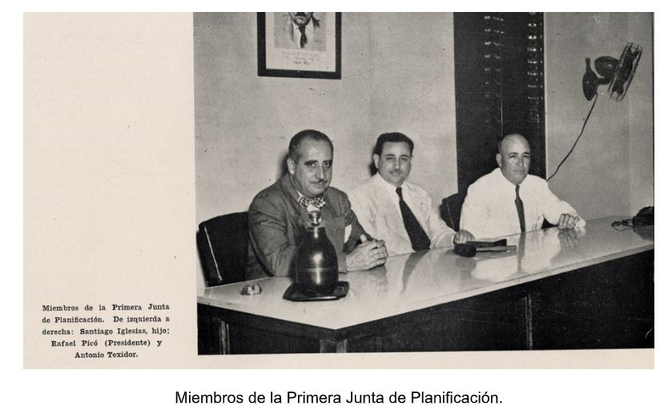

Creado por: Jorge Luis Luna
La Junta de Planificación de Puerto Rico es una agencia que su propósito es
diseñar y formular la política pública a corto, mediano y largo plazo
del desarrollo económico, y el uso de los recursos de la Isla.
Hoy descubriremos un poco de la historia, su misión y visión, las leyes
que caen en la responsabilidad de esta agencia y como estas afectan al mundo
de diferentes formas y de sus tres programas.
La Junta de Planificación de Puerto Rico fue creada por la Ley Núm. 213 del
12 de mayo de 1942, y comenzó sus operaciones el 10 de agosto del mismo año
bajo la presidencia del Dr. Rafael Picó Santana, y el Gobernador siendo, Rexford G. Tugwell.
Cuando inicio las operaciones de la nueva Agencia contaba con 18 empleados
dirigidos por una “Junta” de tres miembros, constituida por Santiago Iglesias,
Antonio Texidor y su presidente, el Dr. Rafael Picó.

`De izquierda a derecha: Santiago Iglesias, Rafael Pico (Presidente) Antonio Texidor
Las operaciones consistían en responder a las necesidades y cambios socioeconómicos que enfrentaba Puerto Rico, en 1975 mediante la Ley Núm. 75.
El 12 de mayo de 1943 la Legislatura aprobó la ley habilitadora 122, que le dio la oportunidad a la Junta de crear el Comité para Diseños de Obras Públicas y tuvo la responsabilidad de crear planos para Puerto Rico después de la Segunda Guerra Mundial. Con esto se diseñaron hospitales, escuelas, viviendas y centros comunitarios.
Esto es un dato que no todo el mundo sabe y que nunca se a preguntado.
Dos años después, a
Ley 68-1945 ordenó a la Junta preparar mapas de límites territoriales de
los municipios y barrios de Puerto Rico, y en el 1950 la Junta completó esta tarea.
La Ley 26-2001 enmendó la Ley 75-1975, con el fin de requerir que por lo menos un de miembro de la Junta deberá contar con una preparación académica, experiencia en el área de planificación y tener la Licencia de “Planificador Profesional”.
Guiar a Puerto Rico hacia un desarrollo sostenible y resiliente de forma ordenada, racional, balanceada y sensible de acuerdo con las necesidades sociales, ambientales, urbanas y económicas actuales y futuras. Con el fin de fomentar la salud, la seguridad, el orden, la convivencia, la prosperidad, la cultura, la solides económica y el bienestar.
Fomentar una planificación ágil y dinámica para Puerto Rico que represente un cambio en paradigma y así promover el desarrollo socioeconómico, la reutilización y readaptación del entorno construido, la revitalización de los centros urbanos, la densificación de las zonas urbanas, la promoción de los usos mixtos, la conservación de nuestras estructuras y sitios históricos, la conservación y aprovechamiento de nuestros recursos naturales y el desarrollo de la agricultura.
Hablaremos únicamente de esta ley porque considero que es la más impotante a mencionar
Esta ley fue creada en el 1975
Se creo con el propósito de guiar el desarrollo integral de Puerto Rico de un modo coordinado,
adecuado, económico, ambientales, físicos y económicos.
Fortaleciendo las orientaciones, coordinaciones e integraciones de la política pública sobre el desarrollo integral del país. Además, de fomentar en la mejor forma la salud, la seguridad, la defensa la cultura, económica y el bienestar general de los actuales y futuros habitantes, entre muchas cosas más.
El deber de este programa, es proveer el análisis, ofrecer asesoramientos e inteligencia económica, social y censal. Este programa:
Además se divide en tres subprogramas:
El deber de este programa es asesorar en el proceso de planificación de los usos del suelo y del desarrollo de
la infraestructura.
Además hace planes de desarrollo urbano, económico y ambiental para poder garantizar que el espacio se
utilice de forma óptima.
Se divide en tres programas:
El sistema de información geográfica es una plataforma que categoriza, analiza, muestra y almacena toda
la información de la tierra. Es lo que se usa en la actualidad para estudiar y trabajar la geografía de
manera efectiva y rápida.
Es decir, este programa se encarga de analizar y visualizar el uso del espacio. Lo hace a partir de:
Un reglamento conjunto es la unificación de lo relacionado con los asuntos de planificación, calificación, permisos, ambiente y asuntos procesales y administrativos, y lo esencial de esto, es que se hace en un solo documento.
¿Entonces qué sucedió con el reglamente de conjunto de 2019?
El Tribunal de Apelaciones, el 4 de marzo de 2020, nulo el Reglamento Conjunto de 2019.
Esta anulación se debe a que la Junta de Planificación no cumplió con la Ley de Procedimiento
Administrativo Uniforme. Esta ley se asegura que las normas que afecten a los ciudadanos actúen de
manera eficiente y efectiva.
El 15 de noviembre de 2019, el Tribunal Supremo, también determinó que la Junta de Planificación no
había cumplió con Ley de Procedimiento Administrativo Uniforme.
La nulidad de este reglamento alivio a la mayoría de los pequeños comerciantes y municipios que van a
poder recuperar procedimientos que fueron eliminados.
También, para los municipios y organizaciones ambientales, porque planeaban cambiar la clasificación de
todos los municipios y establecer una nueva.
Es una plan para el uso claro y preciso de algún terreno. Identifica el valor del territorio, evalúa
su grado de utilidad, la aptitud, y las cualidades apreciables tangibles e intangibles del territorio.
En otras palabras, establece una estructura clave y ágil de los terrenos del país, dictando la política
pública del valor de protección y desarrollo sostenible.
Este plan consiste en: